Get the biological gist of any research paper — instant detection of genes, variants, accessions, methods, drugs, cell lines, and more.
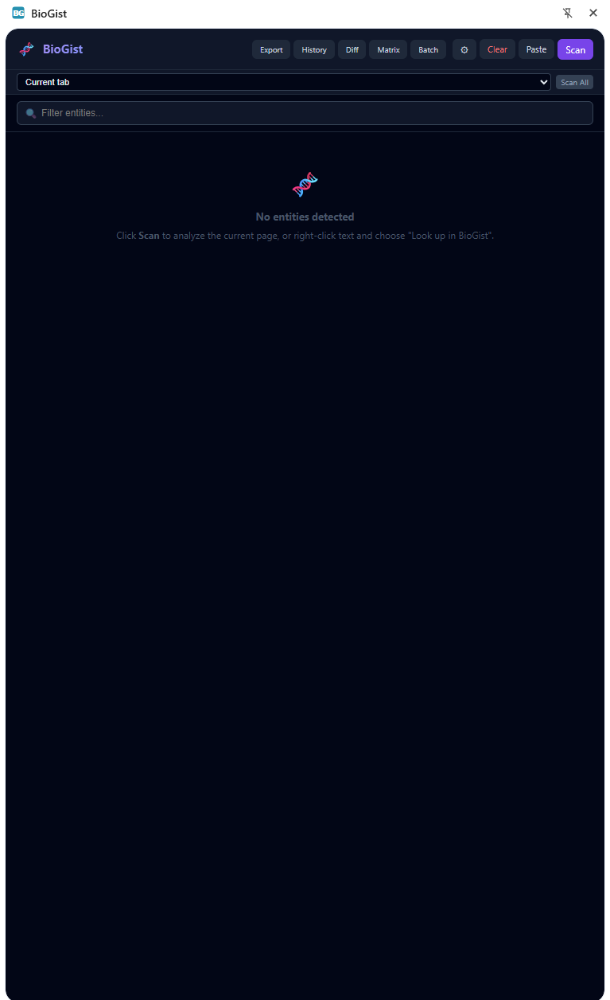
Clean header with adaptive toolbar
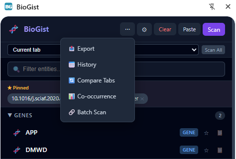
More menu (narrow sidebar)
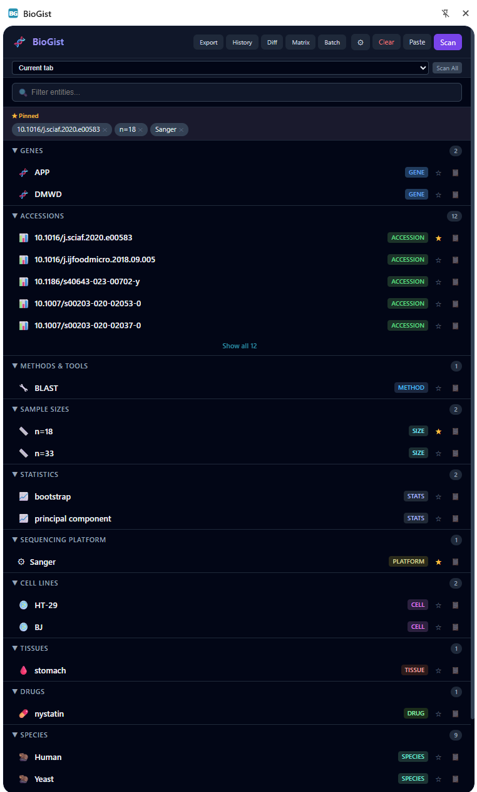
Scan results with pinned entities
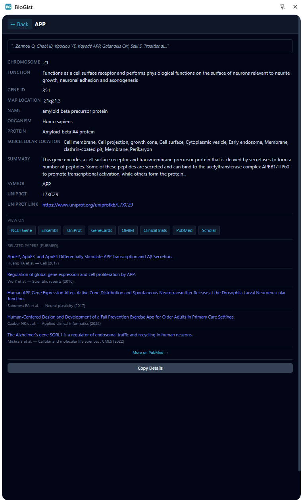
Gene detail + inline PubMed papers
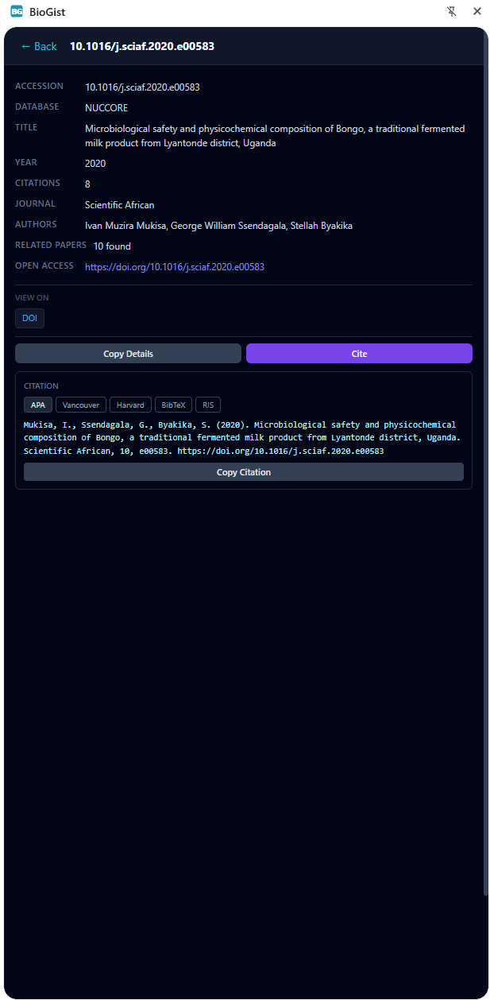
DOI citation in APA format
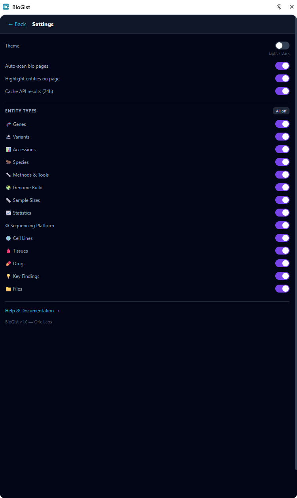
Settings with entity type toggles
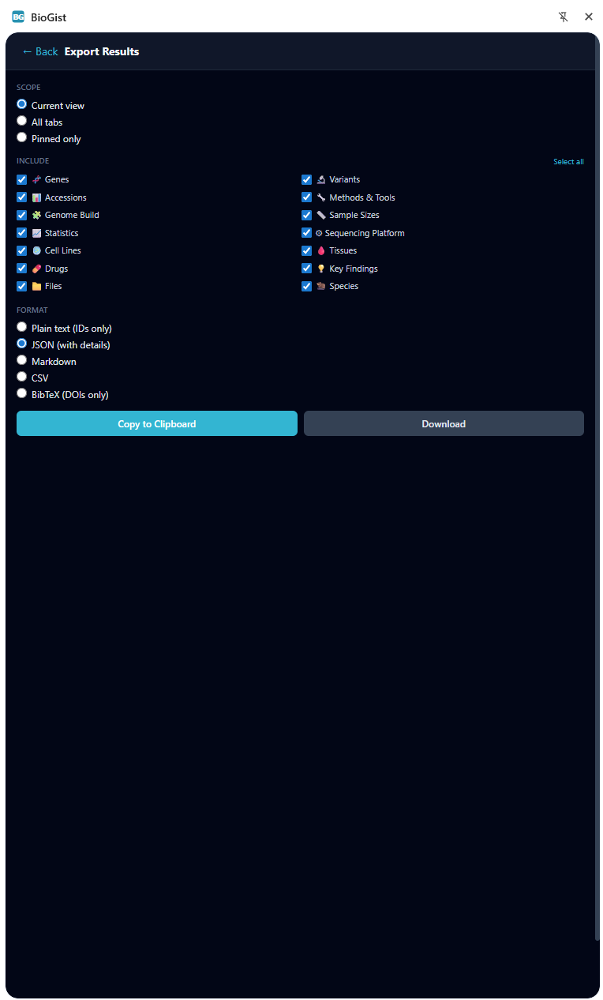
Export with scope & format
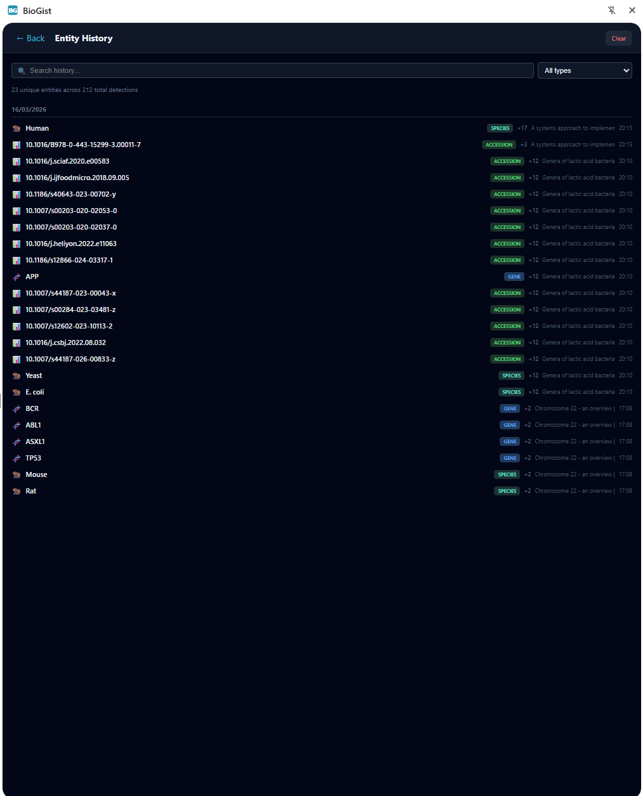
Entity history with search & filter
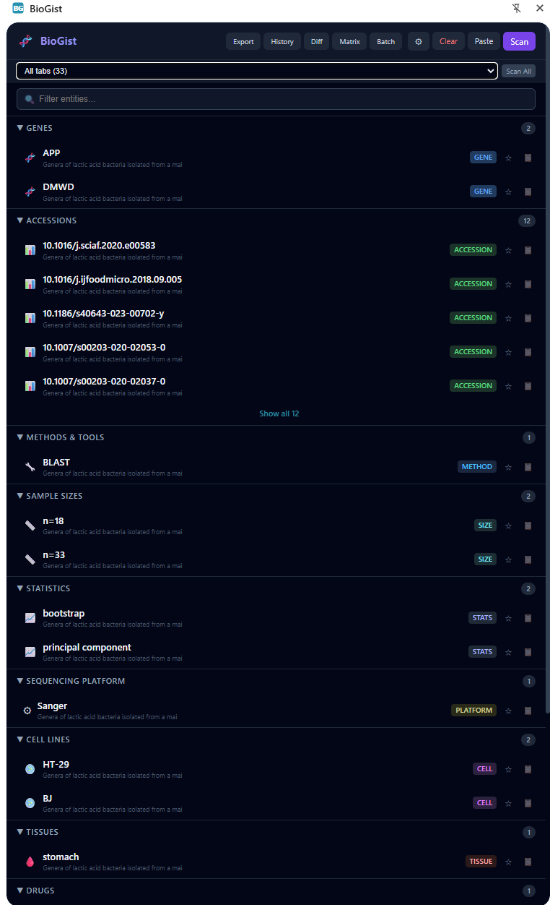
All tabs merged view
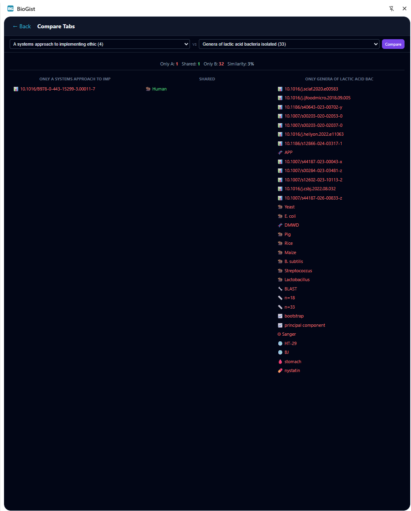
Compare two tabs (entity diff)
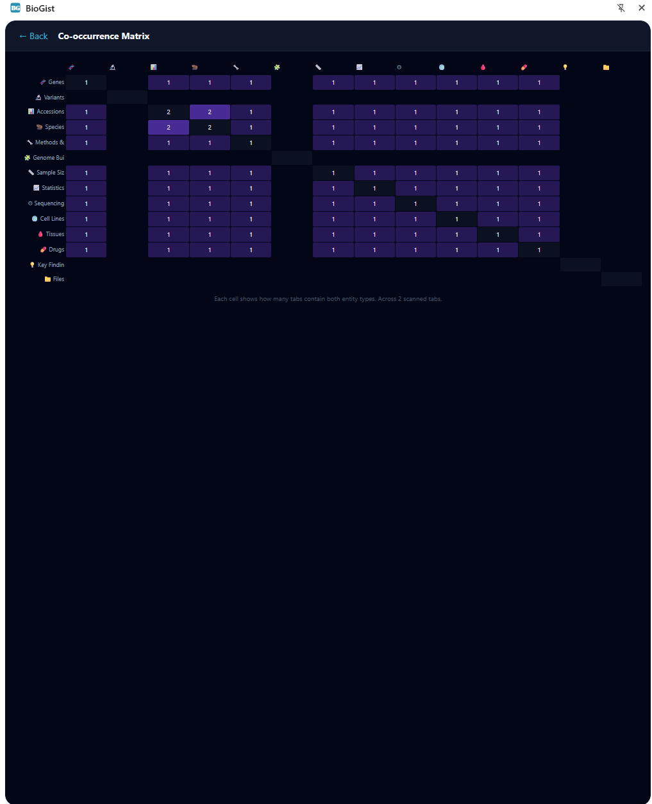
Co-occurrence matrix
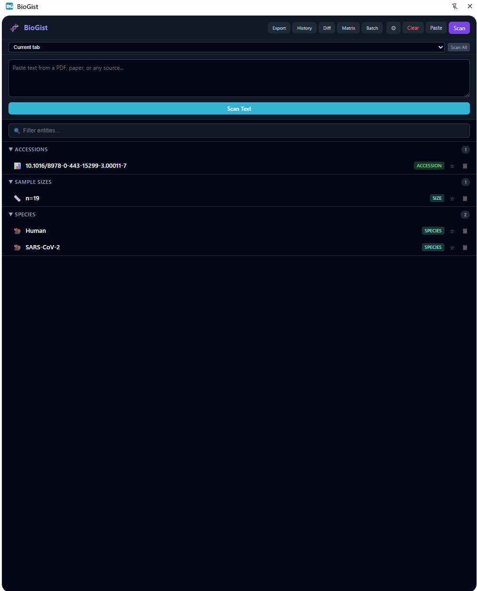
Paste text to scan (PDF workaround)
| Type | Examples | Highlight |
|---|---|---|
| Genes | BRCA1, TP53, EGFR, KRAS, MTHFR, APOE — 44,959 HGNC symbols (full set loaded from separate file, with fallback to 330 curated symbols) | purple |
| Variants | rsIDs (rs28934576), HGVS (NM_007294.4:c.5266dupC), ClinVar (VCV...), COSMIC (COSM...) |
cyan |
| Accessions | GEO (GSE/GSM), SRA (SRR/SRP), BioProject (PRJNA), Ensembl (ENSG), PDB, PMID, DOI — 27 patterns total |
amber |
| Methods & Tools | BWA-MEM2, GATK, DESeq2, Salmon, STAR, Bowtie2, Samtools — ~200 bioinformatics tools with version detection | cyan |
| Genome Builds | GRCh38, GRCh37, hg19, hg38, T2T-CHM13, GRCm39, mm10 — human and mouse reference builds | cyan |
| Sample Sizes | n=1,234, N = 500, n=12,345 — numeric sample size patterns |
amber |
| Statistical Methods | Fisher's exact test, Bonferroni, Benjamini-Hochberg, Kaplan-Meier, Cox regression — 30+ methods | cyan |
| Sequencing Platforms | Illumina NovaSeq, PacBio HiFi, Oxford Nanopore, 10x Genomics, Ion Torrent, MGI | cyan |
| Cell Lines | HeLa, HEK293, MCF-7, A549, Jurkat, K562 — ~120 common lines organized by organ | green |
| Tissues | Hippocampus, Cerebellum, Liver, Kidney, Pancreas — ~35 anatomical terms | green |
| Drugs | Olaparib, Pembrolizumab, Imatinib, Trastuzumab — ~60 oncology and clinical drugs | rose |
| Key Findings | Sentences containing genes paired with significance keywords (e.g., "BRCA1 was significantly associated with...") | amber |
| Species | Human, Mouse, Zebrafish, Arabidopsis, E. coli, SARS-CoV-2 — ~45 organisms across mammals, fish, plants, fungi, bacteria, and viruses | green |
| File Links | FASTQ, BAM, VCF, BED, GFF, CSV, and 20+ other bioinformatics formats detected as links on the page | rose |
| Clinical Trials | NCT numbers (NCT04035486, NCT06127589) — links to ClinicalTrials.gov registry entries |
cyan |
| Funding | NIH grants (R01CA123456, U01HG009088), ERC grants, NSF awards — links to NIH Reporter |
amber |
| Repositories | GitHub (github.com/user/repo), Zenodo (zenodo.org/record/...), PyPI, Bioconductor, CRAN URLs |
cyan |
| P-values | p < 0.05, p = 3.2e-8, FDR < 0.01, q-value = 0.03 — statistical significance values |
amber |
After scanning, BioGist highlights detected entities directly on the page. Genes appear in purple, variants/methods/platforms/stats/builds in cyan, accessions/sample sizes/key findings in amber, species/cell lines/tissues in green, and drugs/files in rose. Click any highlighted term to jump to its details in the sidebar.
Click a detected gene to see:
Click a detected variant (rsID, HGVS, ClinVar, or COSMIC) to see:
Click a GEO or SRA accession to see:
One click copies all detected accessions as a newline-separated list, ready to paste into a spreadsheet, script, or search tool. For more export options (JSON, Markdown, download), use the Export menu.
When BioGist detects links to bioinformatics files (FASTQ, VCF, BED, etc.) on the page, click "Open in BioPeek" to send them directly to BioPeek for visualization and analysis.
For detected SRR accessions, BioGist generates a ready-to-use fasterq-dump command:
fasterq-dump --split-3 SRR1234567 -O ./outputClick to copy the command to your clipboard.
Use the tab dropdown at the top of the sidebar to choose which tab to scan: Current tab, All tabs, or pick a specific tab by name. The "Scan All Tabs" button scans every open tab and merges the results into a single entity list. Each entity shows which tab(s) it was found in.
Click the star icon next to any entity to pin it. Pinned entities appear at the top of the list and persist across sessions via Chrome storage. Useful for tracking key genes or variants across multiple papers.
Each entity in the sidebar has a small copy icon. Click it to copy the entity name or ID to your clipboard instantly, without opening the detail panel.
Each detected entity shows an occurrence count badge indicating how many times it appears on the page. Click the badge to expand snippet context showing the surrounding text for each occurrence, making it easy to see how the entity is discussed.
Use the search box at the top of the sidebar to filter detected entities by keyword. Matches are filtered across all entity types in real time.
Select any text on a webpage, right-click, and choose "Look up in BioGist" from the context menu. BioGist will attempt to identify it as a gene, variant, or accession and show details in the sidebar.
For PDFs and other content that cannot be scanned directly, click the Paste button in the sidebar header, then paste copied text from the PDF. BioGist scans the pasted text for entities just like it would scan a webpage. This works around the limitation that browser extensions cannot access PDF content directly.
Click the gear icon in the sidebar header to open Settings. Under Entity Types, toggle individual types on or off:
This is useful for reducing clutter — for example, a variant analyst can disable Methods, Cell Lines, and Tissues to focus on Genes and Variants.
When BioGist detects a DOI, the detail panel includes a Cite button. Click it to generate a citation in your preferred format:
Citation data is fetched from the CrossRef API.
DOI entities are enriched with metadata from the OpenAlex API:
Click the export button in the sidebar footer to open the full-screen export dialog with fine-grained control:
The entity detail panel shows direct links to external databases based on entity type:
Click any link to open the database entry in a new tab.
In the entity detail view, click the "Copy Details" button to copy all displayed information (summary, function, location, links) as formatted text to your clipboard.
Detected species show enriched details in the detail panel including genome assembly, approximate gene count, chromosome count, and taxonomic lineage. Useful for quick reference when reading comparative genomics papers.
Click the theme toggle icon in the sidebar header to switch between dark and light mode. Your preference is saved and applied automatically on next open.
BioGist does not run in the background or automatically scan pages. When you click Scan (or press Ctrl+Shift+S), the content script is injected into the active tab and scans the page text. This privacy-first approach means BioGist never accesses page content until you explicitly request it.
Scan results are stored per-tab via the background service worker. When you switch between tabs and return, your previous scan results are restored without re-scanning. Entity data persists until the tab is closed or a new scan is triggered.
API results from NCBI, UniProt, gnomAD, CrossRef, and OpenAlex are cached locally in browser storage for 24 hours. Repeat lookups for the same entities load instantly without additional API calls.
In the detail panel for genes, variants, drugs, cell lines, and methods, click "Find Related Papers" to search PubMed directly from the sidebar. The top 5 results are displayed inline with clickable titles, authors, journal, and year. A "More on PubMed" link opens the full search. Results are cached for 24 hours.
Search queries are tailored per entity type: genes search with [Gene] AND human[Organism], drugs with [MeSH Terms], cell lines and methods with [Title/Abstract].
Every entity detail panel shows "View on" links to relevant databases:
Open the More menu (…) → Compare Tabs to see a side-by-side diff of entities between two scanned papers. Select two tabs from the dropdowns and click Compare to see:
A Jaccard similarity score shows how much the two papers overlap in detected entities.
Open the More menu (…) → Co-occurrence to see which entity types appear together across your scanned tabs. Each cell shows how many tabs contain both entity types. Purple intensity indicates frequency. Requires at least 2 scanned tabs.
Open the More menu (…) → History to see all entities detected across sessions. History is persistent (stored locally) and shows:
History is capped at 2,000 entries to prevent storage bloat.
Open the More menu (…) → Batch Scan to scan multiple papers at once. Paste up to 20 URLs (one per line) and click "Scan All URLs". BioGist will:
In any entity detail panel, click "Add Note" at the bottom to attach a personal annotation. Notes are stored locally and persist across sessions. Useful for tracking thoughts like "Check this variant in our cohort" or "Relevant to grant proposal".
The sidebar header automatically adapts to the available width. On wide sidebars, all tool buttons (Export, History, Diff, Matrix, Batch) are shown inline. On narrow sidebars, overflowing buttons collapse into a … More dropdown menu. This is handled automatically via ResizeObserver — no configuration needed.
Each of the 18 entity types has its own detail panel with type-specific information:
| Entity Type | Detail Fields |
|---|---|
| Genes | NCBI Gene summary, UniProt protein function, inline PubMed papers, links to NCBI, Ensembl, GeneCards, UniProt, OMIM, ClinicalTrials, PubMed, Scholar |
| Variants | dbSNP info, gnomAD allele frequency, ClinVar significance |
| Accessions | GEO/SRA metadata, context-appropriate database links |
| DOIs | Citation count, authors, journal, open access URL (OpenAlex), Cite button (CrossRef) |
| Methods & Tools | Category, description, homepage URL |
| Genome Builds | Organism, release year, compatibility notes |
| Sample Sizes | Parsed numeric value |
| Statistical Methods | Category, use case description |
| Sequencing Platforms | Technology, read length, throughput |
| Cell Lines | Tissue of origin, species, notes, link to Cellosaurus |
| Tissues | Organ system |
| Drugs | Drug class, molecular target, FDA status, indication, links to DrugBank, ClinicalTrials, RxList |
| Key Findings | Full sentence with context |
| Species | Genome assembly, gene count, chromosome count, taxonomic lineage |
| Clinical Trials | NCT number, link to ClinicalTrials.gov registry entry |
| Funding | Grant ID, agency, link to NIH Reporter |
| Repositories | Repository name, direct link to GitHub/Zenodo/PyPI/Bioconductor/CRAN |
| P-values | Parsed significance value, threshold indicator |
| Action | How |
|---|---|
| Toggle sidebar | Ctrl+Shift+B or click the BioGist extension icon |
| Scan page | Ctrl+Shift+S or click "Scan" button |
| Look up selected text | Select text on page, right-click → "Look up in BioGist" |
| Scan all tabs | Click "Scan All" next to the tab dropdown |
| Pin entity | Click the star icon next to any entity |
| Quick copy | Click the clipboard icon next to any entity name |
| Export | More (…) → Export → choose scope, types, format |
| Compare tabs | More (…) → Compare Tabs → select two tabs |
| Co-occurrence | More (…) → Co-occurrence (needs 2+ scanned tabs) |
| History | More (…) → History → search and filter |
| Batch scan | More (…) → Batch Scan → paste URLs |
| Find papers | Open entity detail → click "Find Related Papers" |
| Cite DOI | Open DOI detail → click "Cite" → APA / Vancouver / Harvard / BibTeX / RIS |
| Add note | Open entity detail → click "Add Note" at the bottom |
| Paste text | Click "Paste" button, then paste text from clipboard |
| Settings | Click gear icon → theme, entity types, cache, highlights |
fasterq-dump command you can copy| Problem | Solution |
|---|---|
| No entities detected | The page may not contain recognized gene symbols or accessions. Try selecting specific text and right-clicking → "Look up in BioGist". |
| API errors or timeouts | NCBI has rate limits (3 requests/sec without an API key). Wait a moment and try again. Cached results are not affected. |
| Sidebar not opening | Ensure the extension is enabled at chrome://extensions. Try refreshing the page, then clicking the icon again. |
| Highlights not visible | Some sites use CSS that conflicts with highlighting. Entity results are still available in the sidebar even if page highlights do not appear. |
| Missing gene symbol | BioGist loads 44,959 HGNC symbols but excludes ~600 common English words to avoid false positives. If a gene name matches an excluded word, select it and use right-click → "Look up in BioGist". |
| "Page needs reload" message | Tabs that were open before the extension was installed or updated need a page refresh. BioGist shows a "Page needs reload" message — click it or refresh the tab manually, then scan again. |
BioGist — the biological gist of any research paper
Built by Oric Labs. Part of the BioLang ecosystem.
Report issues or request features: GitHub Issues
BioGist is designed for researchers, bioinformaticians, and students who read scientific papers and want instant context on the genes, variants, methods, drugs, and datasets mentioned in them — without leaving the page.
Multi-browser support: BioGist is built with a shared core (shared/) and browser-specific adapters (chrome/, firefox/) with build scripts for each platform.